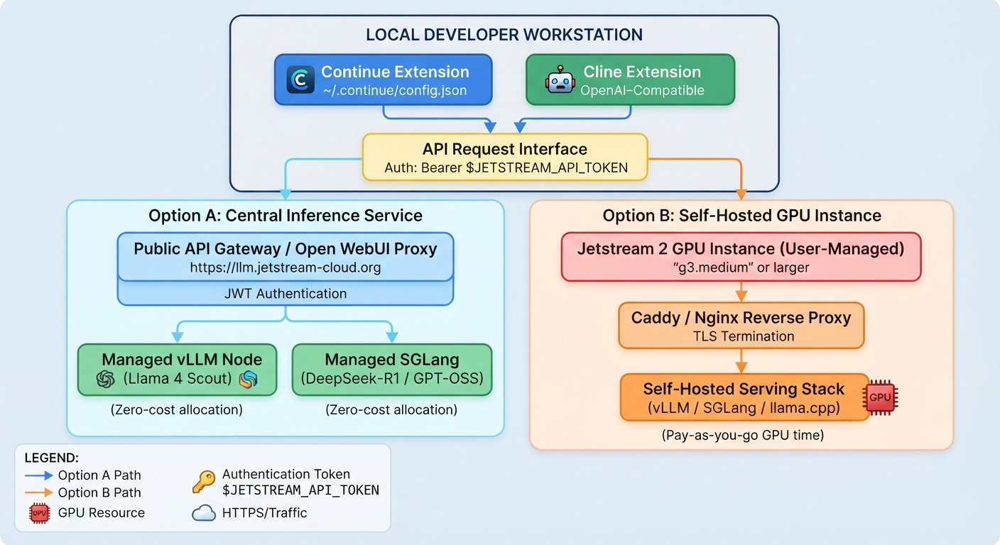

Running & Integrating LLMs on Jetstream 2
For the impatient
Note
For most users the zero‑cost central service at
is the fastest way to start querying Llama 4 Scout, DeepSeek‑R1, or GPT‑OSS‑120B.
{kind=link}

Warning
The document contains secrets such as tokens. They should never be hard‑coded. All token usage must reference the
- $JETSTREAM_API_TOKEN
environment variable (see the Safely storing the token locally section). If the document is not clear on that studenst are responsible to update it so others can benefit from it.
Overview
Jetstream 2 gives you two distinct ways to run Large Language Models (LLMs). Both expose an OpenAI‑compatible HTTP API, but they differ in how the request is routed:
| Routing path | What it is | Authentication |
|---|---|---|
| Through the Open WebUI proxy | Public gateway that forwards the call to Jetstream’s managed inference service. | Requires a JWT API token (generated in the Open WebUI). |
| Direct backend (vLLM / SGLang) | Calls the native backend containers directly. | No token required (you may supply any non‑empty string if your client insists on an apiKey). |
Note
The proxy route uses the public API gateway and needs your token; the direct route hits the native vLLM/SGLang server without authentication.
To help you decide, the table below compares the two deployment models.
| Feature | Option A – Central Inference Service | Option B – Self‑Hosted GPU Instance |
|---|---|---|
| Cost | Zero‑cost allocation (only your compute quota) | Pay‑as‑you‑go GPU time |
| Setup time | < 5 min (no VM provisioning) | Hours (GPU instance, OS, serving stack) |
| Model catalogue | Pre‑deployed, high‑end open models (Llama 4 Scout, DeepSeek‑R1, GPT‑OSS‑120B) | Any model you upload (GGUF, full‑precision, LoRA, …) |
| Flexibility | Fixed backend versions, managed scaling | Full control over environment, custom training, fine‑tuning |
| Network access | Public API (token‑auth) or internal‑only direct endpoints | Public only if you expose via TLS/SG; otherwise internal only |
| Typical use‑case | Quick prototyping, API‑first apps | Custom weights, experimental quantisation, training pipelines |
Warning
Do not use Option B unless you are prepared for GPU charges.
Prerequisites
Option A – Central Inference Service
-
An active Jetstream 2 account.
-
API token (JWT) generated from the Open WebUI – see the “Obtaining an Open WebUI API Token” section below.
-
Ability to make outbound HTTPS requests from your workstation (no firewall blocks).
Option B – Self‑Hosted GPU Instance
-
GPU quota (e.g. a
g3.mediumnode or larger) and a project that permits GPU allocations. -
Familiarity with SSH,
git, and a Linux shell. -
(Optional but recommended) a domain name or Jetstream sub‑domain and a TLS terminator (Caddy, Nginx, Traefik).
Obtaining an Open WebUI API Token (Option A)
Jetstream 2’s central inference service protects the public gateway with a JWT API token that you generate in the Open WebUI. The steps below are current as of August 2026; if the UI changes, look for a “API keys” section under your user profile.
1. Log in to the Open WebUI
-
Open a browser and go to https://llm.jetstream-cloud.org.
-
Sign in with your Jetstream 2 credentials (institutional login or Jetstream password).
2. Navigate to the token‑creation page
| UI element | Action |
|---|---|
| User‑profile icon (lower‑left corner) | Click it. |
| Settings | Choose it from the pop‑up menu. |
| Account tab | Switch to the “Account” tab inside Settings. |
| API keys section | Scroll down until you see API keys. |
| Create new secret key button | Click it. |
| Name / description (optional) | Give the key a memorable name, e.g. continue‑dev‑token. |
| Create | Press the Create button. |
A modal appears with a long string that looks like eyJhbGciOiJIUzI1NiIsInR5cCI6IkpXVCJ9…. Copy it immediately – you will not be able to see the full token again.
3. Token lifespan & rotation
- The generated JWT is valid for 30 days. After it expires the API will return
401 Unauthorized. - When you get a warning in your client (or see a
401), repeat the steps above to generate a fresh token. - For production‑like workflows store the token in a secret manager (e.g. a
.envfile, GitHub Secrets, or a Vault) and rotate it before the 30‑day expiry.
4. Safely storing the token locally
# ~/.ssh/jetstream.env (file owner‑only, 600 permissions)
JETSTREAM_API_TOKEN="eyJhbGciOiJIUzI1NiIsInR5cCI6IkpXVCJ9…"
Warning
Never commit the token to a public repository. If you accidentally do, revoke the key immediately from the Open WebUI and generate a new one.
Option A – Central Inference Service (recommended for most users)
1. Access via the Open WebUI proxy (public, token‑protected)
| Parameter | Value |
|---|---|
| Base URL | https://llm.jetstream-cloud.org/api/ |
| Auth header | Authorization: Bearer $JETSTREAM_API_TOKEN |
| Supported models | llama-4-scout, deepseek-r1, gpt-oss-120b (full catalog on the Jetstream portal) |
Quick test with curl
curl -X POST https://llm.jetstream-cloud.org/api/v1/chat/completions \
-H "Authorization: Bearer $JETSTREAM_API_TOKEN" \
-H "Content-Type: application/json" \
-d '{
"model": "llama-4-scout",
"messages": [
{
"role": "user",
"content": "Say hello"
}
]
}'
2. Direct backend endpoints (internal network or SSH tunnel)
| Model | Direct endpoint | Model ID |
|---|---|---|
| Llama 4 Scout | https://llm.jetstream-cloud.org/llama-4-scout/v1/ |
llama-4-scout |
| DeepSeek‑R1 | https://llm.jetstream-cloud.org/sglang/v1/ |
deepseek-r1 |
| GPT‑OSS‑120B | https://llm.jetstream-cloud.org/gpt-oss-120b/v1/ |
gpt-oss-120b |
CORS / Network note – These URLs are reachable only from Jetstream’s internal network (or via an SSH tunnel). If your client library requires an
apiKey, any non‑empty string (e.g."dummy") will satisfy it.
Option B – Self‑Hosting on a Jetstream 2 GPU Instance
1. Provision the GPU VM
| Step | How to do it |
|---|---|
Open Exosphere → Create Instance → choose a GPU flavor (g3.medium or larger) |
UI |
| Attach a security group that allows inbound TCP 8080 (or the port you’ll use) | UI |
(Optional) Assign a floating IP or use the Jetstream DNS sub‑domain <name>.projects.jetstream-cloud.org |
UI |
2. Install the serving stack (example with llama.cpp)
# 1. Install Miniforge (lightweight conda)
curl -LO https://github.com/conda-forge/miniforge/releases/latest/download/Miniforge3-Linux-x86_64.sh
bash Miniforge3-Linux-x86_64.sh -b -p $HOME/mf
export PATH=$HOME/mf/bin:$PATH
# 2. Install the Python bindings with server support
pip install "llama-cpp-python[server]" # pulls the compiled llama.cpp binary
# 3. Download a GGUF model (example: Llama‑3‑8B‑Instruct)
wget -O model.gguf https://huggingface.co/<repo>/model.gguf
3. Run the OpenAI‑compatible server
python -m llama_cpp.server \
--model ./model.gguf \
--host 0.0.0.0 \
--port 8080 \
--n_ctx 8192 # adjust to fit your GPU’s VRAM
The server advertises an OpenAI‑compatible endpoint at http://<instance‑ip>:8080/v1/.
4. Expose the service over HTTPS (recommended)
# /etc/caddy/Caddyfile
{
email you@example.com
}
<your‑domain> {
reverse_proxy * localhost:8080
encode gzip
}
# Quick Caddy install
curl -1sLf 'https://dl.cloudsmith.io/public/caddy/stable/gpg.key' | sudo apt-key add -
curl -1sLf 'https://dl.cloudsmith.io/public/caddy/stable/deb.deb.txt' | sudo tee /etc/apt/sources.list.d/caddy-stable.list
sudo apt update && sudo apt install caddy
sudo systemctl restart caddy
Tip – If you don’t own a domain, Jetstream provides a free sub‑domain like
my‑llm.projects.jetstream-cloud.org. Point the Caddy block to that hostname.
Integrating Jetstream LLMs into Continue
continue.dev reads a JSON file (~/.continue/config.json). Add a model entry that points at the OpenAI‑compatible endpoint you chose.
Authentication rule –
Proxy endpoints: setapiKeyto$JETSTREAM_API_TOKEN.
Direct or self‑hosted endpoints:apiKeycan be"dummy"or omitted.
{
"models": [
{
"title": "Jetstream – Llama‑4‑Scout (central proxy)",
"provider": "openai",
"model": "llama-4-scout",
"apiBase": "https://llm.jetstream-cloud.org/api/v1",
"apiKey": "$JETSTREAM_API_TOKEN"
},
{
"title": "Jetstream – My Custom GGUF (self‑hosted)",
"provider": "openai",
"model": "my-gguf-model",
"apiBase": "https://my-llm.projects.jetstream-cloud.org/v1",
"apiKey": "dummy"
}
],
"tabAutocompleteModel": {
"title": "Jetstream – Qwen‑2.5‑Coder",
"provider": "openai",
"model": "qwen-2.5-coder",
"apiBase": "https://llm.jetstream-cloud.org/api/v1",
"apiKey": "$JETSTREAM_API_TOKEN"
}
}
Note –
continueautomatically appends/chat/completionsto theapiBase, so you don’t need to include it manually.
Using an environment variable (safer)
-
Store the token as shown in Safely storing the token locally and export
JETSTREAM_API_TOKEN. -
In the JSON, set
apiKeyto an empty string – Continue will fall back to the environment variable:
{
"models": [
{
"title": "Jetstream – Llama‑4‑Scout (central proxy)",
"provider": "openai",
"model": "llama-4-scout",
"apiBase": "https://llm.jetstream-cloud.org/api/v1",
"apiKey": ""
}
]
}
Integrating Jetstream LLMs into Cline
-
Open Cline → Settings (gear icon).
-
Set Provider → OpenAI Compatible.
-
Fill in the fields:
| Field | Example value |
|---|---|
| Base URL | https://llm.jetstream-cloud.org/api/v1 (central proxy) or https://my-llm.projects.jetstream-cloud.org/v1 (self‑hosted) |
| API Key | $JETSTREAM_API_TOKEN (proxy) or dummy / blank (direct/self‑hosted) |
| Model ID | llama-4-scout (proxy) my-gguf-model (self‑hosted) |
| Context window | 8192 for 8 B models, 32768 for 70 B‑class (adjust to GPU memory) |
Press Save, start a new Cline chat, and you should see responses from the selected model.
Using a JSON settings file (optional)
Cline can also read a workspace‑level settings.json. Reference the environment variable directly:
{
"openai": {
"apiBase": "https://llm.jetstream-cloud.org/api/v1",
"apiKey": "${env:JETSTREAM_API_TOKEN}",
"model": "llama-4-scout",
"maxTokens": 8192
}
}
If ${env:…} cannot be resolved, Cline will fall back to an empty string, resulting in a 401. Ensure the variable is exported before launching VS Code.
Troubleshooting
| Symptom | Likely cause | Fix |
|---|---|---|
| CORS error in a browser‑based tool | Direct endpoint accessed from outside Jetstream’s network | Switch to the proxy endpoint or create an SSH tunnel (ssh -L 8080:llm.jetstream-cloud.org:8080 <user>@jetstream-cloud.org). |
| 401 Unauthorized on central API | Missing, malformed, or expired JWT | Regenerate a fresh token (see Obtaining an Open WebUI API Token) and ensure you use $JETSTREAM_API_TOKEN. |
| OOM / “context length too large” on self‑hosted server | --n_ctx exceeds GPU VRAM |
Lower --n_ctx or use a higher‑compression GGUF (e.g., q4_0). |
Cannot reach https://my-llm… |
Security group blocks inbound 443/8080 | Add a rule allowing inbound TCP on the port you bound (0.0.0.0/0 or restrict to your IP). |
502 Bad Gateway after adding Caddy |
Caddy not reloaded | sudo systemctl reload caddy (or restart the reverse‑proxy service). |
Model not found (model_not_found) |
Wrong model identifier in client config | Run curl https://<endpoint>/v1/models to see the exact model ID. |
Quick sanity‑check command
curl -X POST https://llm.jetstream-cloud.org/api/v1/chat/completions \
-H "Authorization: Bearer $JETSTREAM_API_TOKEN" \
-H "Content-Type: application/json" \
-d '{"model":"llama-4-scout","messages":[{"role":"user","content":"Hello Jetstream!"}]}'
A valid response contains a choices array. If you get 401, double‑check the token’s expiry and that $JETSTREAM_API_TOKEN is correctly exported.
Performance‑tuning cheat‑sheet (self‑hosted)
| Parameter | Typical values | Effect |
|---|---|---|
--n_ctx |
2048–32768 (depends on VRAM) | Larger context → more memory usage. |
--gpu-layers |
-1 (auto) or 30 on an 8 GB GPU |
Number of transformer layers executed on GPU; lower values shift work to CPU. |
--batch-size |
8–32 | Bigger batch improves throughput but consumes more memory. |
| Quantization | q4_0, q4_1, q5_0, q8_0 |
Higher compression → lower VRAM, slight accuracy loss. |
--temp / --top_p |
Default 0.7 / 0.95 |
Controls randomness of generation. |
References & Further Reading
- Jetstream 2 Inference Service Overview – https://docs.jetstream-cloud.org/inference-service/overview/
- Running LLMs on Jetstream 2 – https://docs.jetstream-cloud.org/general/running-llm/
- OpenAI API Reference – https://platform.openai.com/docs/api-reference
llama.cpprepository – https://github.com/ggerganov/llama.cppcontinue.devconfiguration docs – https://continue.dev/docs/configurationclineGitHub repository – https://github.com/cline/cline
You’re ready!
Pick the path that matches your needs:
- Central service –
https://llm.jetstream-cloud.orgfor instant, zero‑cost, managed inference. - Self‑hosted GPU – launch a Jetstream instance when you need full control, custom weights, or want to experiment with quantisation.
Warning
Only use the Central service as no cost arise
Appendix
Integrating the Jetstream2 LLM Inference Service ([https://llm.jetstream-cloud.org/](https://llm.jetstream-cloud.org/)) into Cline is straightforward because the service exposes standard OpenAI-compatible endpoints.
You generally do not need an SSH proxy to connect to it from your laptop, as the service is publicly accessible via HTTPS over the internet for the research/academic community (secured via your standard credentials/ACCESS allocation where applicable, though the API routes themselves accept an "empty" or placeholder API key depending on the endpoint setup).
Step 1: Choose your Model and Base URL
Jetstream hosts multiple models under distinct subpaths. Select the Base URL and Model ID matching the model you want to use:
-
Llama 4 Scout
- Provider Type: OpenAI Compatible
- Base URL:
https://llm.jetstream-cloud.org/llama-4-scout/v1 - Model ID:
llama-4-scout - API Key:
empty(or any dummy string likenot-needed)
-
DeepSeek‑R1
- Provider Type: OpenAI Compatible
- Base URL:
https://llm.jetstream-cloud.org/sglang/v1 - Model ID:
deepseek-r1 - API Key:
empty
-
GPT‑OSS‑120B
- Provider Type: OpenAI Compatible
- Base URL:
https://llm.jetstream-cloud.org/gpt-oss-120b/v1 - Model ID:
gpt-oss-120b - API Key:
empty
Step 2: Configure Cline in VS Code
- Open VS Code.
- Click on the Cline icon in the sidebar to open the extension panel.
- Click the Gear icon (Settings) at the top of the Cline panel.
- Set the API Provider dropdown to
OpenAI Compatible. -
Fill in the connection details:
-
Base URL: Enter the appropriate endpoint URL (e.g.,
https://llm.jetstream-cloud.org/llama-4-scout/v1). - API Key: Type
emptyor any random placeholder string (the field usually requires a non‑empty string). -
Model ID: Enter the matching model identifier (e.g.,
llama-4-scoutordeepseek-r1). -
Click Save, start a new Cline chat, and you should see responses from the selected model.
When would you need an SSH tunnel/proxy?
You would only need an SSH proxy if:
- You spun up your own private vLLM or
llama.cppinstance manually on a Jetstream2 VM (e.g., ag3.xlorg3.mediuminstance) instead of using the public managed servicellm.jetstream-cloud.org. - Your local network or institution firewall blocks outbound traffic to custom HTTPS ports (though Jetstream's service runs over standard port 443/HTTPS, so this is rare).
If you are connecting to a custom‑spun instance on a private Jetstream VM, you can open an SSH tunnel from your laptop terminal like this:
Then configure Cline to point to http://localhost:8000/v1 with an OpenAI‑compatible provider. Otherwise, for the public multi‑tenant service, the direct HTTPS URL works out‑of‑the‑box.
Appendix
Generating a Jetstream 2 API Token with the CLI
You can obtain a JWT API token directly from the command line using Jetstream’s official CLI.
Prerequisites
- A Jetstream 2 account (username / password or password‑based SSO).
- A terminal with
curlandjqinstalled. - (Optional) the Jetstream CLI installed via
pip.
Step‑by‑step
- Log in and retrieve the token
The command contacts the Jetstream authentication endpoint, validates your credentials, and writes a JSON file (login.json) containing the JWT.
- Extract the JWT and store it securely
# Extract the token value
jq -r '.access_token' login.json > ~/.ssh/jetstream.env
# Restrict permissions so only you can read it
chmod 600 ~/.ssh/jetstream.env
- Export the token for the current shell (or add it to your rc file)
After exporting, any subsequent command can reference $JETSTREAM_API_TOKEN, e.g.:
curl -s -X POST https://llm.jetstream-cloud.org/api/v1/chat/completions \
-H "Authorization: Bearer $JETSTREAM_API_TOKEN" \
-H "Content-Type: application/json" \
-d '{"model":"llama-4-scout","messages":[{"role":"user","content":"Hello!"}]}'
You now have a $JETSTREAM_API_TOKEN environment variable that can be used with any Jetstream OpenAI‑compatible endpoint.
Warning
- Never commit
~/.ssh/jetstream.env(or any file containing the JWT) to version control. - Keep the file permission at
600to prevent other users on the same host from reading the token. - Rotate the token regularly (the default lifetime is 30 days) and delete old keys from the Open WebUI “API keys” page.
!!! note Assignment Jetstream.1 If something does not work please try to improve